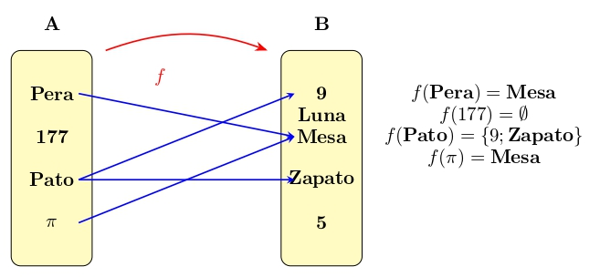
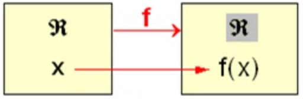

Cálculo I
Relaciones y funciones
![]()
Universidad Técnica de Machala
2026-05-24
CORRESPONDENCIA DE CONJUNTOS: Criterio o ley \(f\)
Si \("A"\) y \("B"\) son conjuntos cualesquiera, se llama correspondencia de \(A\) en \(B\) a todo criterio o ley que asocia elementos de \("A"\) con elementos de \("B"\).
Si el nombre del criterio es \("f"\), para expresar que \("f"\) es una correspondencia de \("A"\) en \("B"\) escibimos \(f:A\longrightarrow B\).
De \("A"\) se dice que es el conjunto inicial de \("f"\), y \("B"\) se dice es el conjunto final de \("f"\)

Observaciones:
En el conjunto inicial “A” puede haber elementos (177) a los que “f” no les asocia nungún elemento de “B”.
En el conjunto inicial “A” puede haber elementos (Pato) a los que “f” les asocie varios elemento de “B”.
En el conjunto final “B” puede haber elementos (5 y Luna) que no corresponden a ningún elemento de “A”.
En el conjunto final “B” puede haber elementos (Mesa) que corresponden a varios elementos de “A”.
Que quede clarito: en la definición de correspondecia no se impone ninguna restricción o traba al criterio \("f"\) que asocia elementos de \("A"\) con elementos \("B"\); por tanto queda definida una correspondencia de \("A"\) en \("B"\) en el mismo instante en que se establece un criterio o ley que asocie elementos de \("A"\) con elementos de \("B"\), aunque ese criterio sea muy absurdo o chiripitíflautico.
Si \(x \in A\) para referirnos al elemento de \("B"\) que \("f"\) asocia a \("x"\), usaremos la notación \("f(x)"\), que los profesionales leen efe de x, pero tú debes leer imagen de x según f.


Aviso navegantes:
¡Están condenados al fracaso los principiantes que se empecinen en leer como profesionales!, pues tras la notación \(f(x)\) hay 5 protagonistas, y el cerebro debe estar simultáneamente pendiente de todos ellos:

El conjunto \("A"\), que es protagonista invisible, pues \("A"\) no parece por ningún lado en la notación \("f(x)"\) … ¡pero está!.
El conjunto \("B"\), también invisible
La ley \("f"\) que asocia elementos de \("A"\) con elementos de \("B"\); es protagonista visible, pues en la notación \("f(x)"\) hay una \("f"\).
El elemento \("x"\) del conjunto \("A"\); también es visible, pues en la notación \("f(x)"\) hay una \("x"\).
El 5° protagonista es un elemento de \("B"\), pero no un elemento de cualquiera de \("B"\), el 5° protagonista es el elemento de \("B"\) que la ley \("f"\) asocia a \("x"\), y para denotarlo nadie ha inventado una notación más clara y concisa que \("f(x)"\), introducida por Euler en 1734.
Funcion real de variable real
¿No es fascinante cómo una función real de variable real puede describir el comportamiento de tantas situaciones en el mundo real, conectando conceptos abstractos con la realidad tangible?
Dirichlet,1854

Llamamos función real de variable real a toda correspondencia \(f: \mathfrak{R} \longrightarrow \mathfrak{R}\); o sea, una función real de variable real es una ley o criterio \(f\) que asocia números reales con números reales.
Se dice que \(f: \mathfrak{R} \longrightarrow \mathfrak{R}\) es una función real porque su conjunto final es \(\mathfrak{R}\) se dice que \(f\) es de variable real porque su conjunto inicial es \(\mathfrak{R}\)
Para expresar que el número real \(x \in \mathfrak{R}_{inicial}\) puede ser el que queramos, se dice que \(x\) es una variable independiente; y para expresar que el número real \(f(x) \in \mathfrak{R}_{final}\) que \(f\) asocia a \(x\) escapa por completo a nuestro control, pues es \(f\) quien decide el valor de \(f(x)\), se dice que el número real que denotamos \("f(x)"\) es una variable dependiente.
DOMINIO DE DEFINICION DE UNA FUNCION
El dominio de definición de la \(f:\mathfrak{R} \longrightarrow \mathfrak{R}\) se denota Dom(f), y es el subconjunto de \(\mathfrak{R}_{inicial}\) formado por los puntos a los que \(f\) les asigna imagen en \(\mathfrak{R}_{final}\):
\[ Dom(f)= \{ x\in \mathfrak{R} \;| \;f(x)\in \mathfrak{R}\} \]
Si \(f(a) \in \mathfrak{R}\) se dice que \(f\) esta definida en el punto \("a"\), y si \(f(a) \notin \mathfrak{R}\) se dice que \("f"\) no está definida en “a”.

Una función real de variable real \(f:A \subset \mathfrak{R} \rightarrow \mathfrak{R}\) es una regla que asigna a cada elemento de un primer conjunto \(A\), un único elemento de un segundo conjunto \(\mathfrak{R}\). Las funciones son relaciones entre los elementos de dos conjuntos.
Se llama dominio de la función \(f\) al conjunto de valores para los cuales la misma está definida
\[Dom\ (f) = A = \{x\in \mathbb R| \exists! y \in \mathbb R: f(x)=y\}\] El conjunto de todos los resultados posibles de una función dada se denomina rango, imagen o codominio de esa función.
\[Im\ (f) = \{y\in \mathbb R| \exists x \in \mathbb R: f(x)=y\}\]
Funciones uniformes
Se dice que la función \(f: \mathfrak{R} \longrightarrow \mathfrak{R}\) es uniforme si cada \(x \in \mathfrak{R}_{\text{inicial}}\) que tiene imagen en \(\mathfrak{R}_{\text{final}}\), tiene una única imagen.
Por ejemplo, la función “f” tal que \(f(x)=1+x^2\) es uniforme, pues cada número real “x” tiene una única imagen.
Por otro lado, la función “g” tal que \((g(x))^2=1+x^2\) no es uniforme, pues \((g(x))^2=1+x^2 \Longrightarrow g(x)=\pm \sqrt{1+x^2}\); o sea, cada número real “x” tiene dos imágenes posibles.
\[g(7)=\pm \sqrt{1+7^2}=\pm \sqrt{50} \quad ;\quad g(4)=\pm \sqrt{1+(-4)^2}=\pm \sqrt{17}\]

Si la función “f” es uniforme, las paralelas al eje de ordenadas no cortan o cortan en un único punto a la gráfica de “f”.
Si “f” no es uniforme, hay rectas paralelas al eje de ordenadas que cortan a dicha curva en dos o más puntos.
SIMETRÍAS DE FUNCIONES
Se dice que \(f:\mathfrak{R} \longrightarrow \mathfrak{R}\) es par si \(f(-x)=f(x)\) así, la gráfica de “\(f\)” es simétrica respecto el eje de ordenadas.
Se dice que \(f:\mathfrak{R} \longrightarrow \mathfrak{R}\) es impar si \(f(-x)=-f(x)\) así, la gráfica de “\(f\)” es simétrica respecto al origen de coordenadas.


El que \(f:\mathfrak{R} \longrightarrow \mathfrak{R}\) sea par o impar es estupendo, pues en tal caso solo nos preocupará dibujar su gráfica si \(x \geq 0\), ya que lo que sucede si \(x < 0\) lo deducimos por simetría.
LA GRAFICA DE UNA FUNCION
El cociente \(\frac{f(x+h)-f(x)}{(x+h)-x}\)
El cociente \(\frac{f(x+h)-f(x)}{(x+h)-x}\), que es la TASA DE CAMBIO de la funcion \(f: \mathfrak{R}\longmapsto \mathfrak{R}\) si la variable independiente varía desde “x” hasta “x+h”, indica cuantas unidades varía la variable dependiente por cada unidad de variación de la variable independiente.

si \(f(x) =x^2\),es:
\[ \begin{array}{ll} TC & =\frac{f(x+h)-f(x)}{(x+h)-x}=\frac{(x+h)^2-x^2}{h}\\ &=\frac{2xh+h^2}{h}= 2.x+h \equiv tg(\theta) \end{array} \]

OTRAS NOTACIONES DE FUNCIONES
A veces, trabajando con una función \(f: \mathfrak{R} \longrightarrow \mathfrak{R}\), para abreviar, se denota “y” al número real \(f(x)\) que “f” asocia a “x”.

Por ejemplo, en vez de escribir: \[ f(x) = 3x - 1 \quad ; \quad f(x) = x \ln(x) \quad ; \quad f(x) = \sin(x^2) \] se escribe: \[ y = 3x - 1 \quad ; \quad y = x \ln(x) \quad ; \quad y = \sin(x^2) \]
Esta notación no es recomendable para los principiantes, porque con ella es más fácil que se les despiste lo esencial. Y lo esencial ahora es asimilar que tras “f(x)” hay cinco protagonistas: el conjunto \(\mathfrak{R}_{\text{inicial}}\), el \(\mathfrak{R}_{\text{final}}\), la correspondencia \("f"\) que asocia elementos de \(\mathfrak{R}_{\text{inicial}}\) con elementos de \(\mathfrak{R}_{\text{final}}\), el número \(x \in \mathfrak{R}_{\text{inicial}}\), y el número \(f(x) \in \mathfrak{R}_{\text{final}}\) que “f” asocia a “x”. Nuestro cerebro debe ser capaz de estar pendiente de los cinco simultáneamente.
LAS RECTAS {.scrollable} (18.28 min)
La gráfica de la \(f: \mathfrak{R} \longrightarrow \mathfrak{R}\) es una curva plana
Siendo constantes “a” y “b”, la gráfica de toda función \(f: \mathfrak{R} \longrightarrow \mathfrak{R}\) tal que \(f(x) = ax + b\) es una recta no perpendicular al eje de abscisas.
Como \(f(0) = a \cdot 0 + b = b\), la recta corta al eje de ordenadas en el punto “b” (es decir, \(\color{blue}{\text{la ordenada de la recta en el origen}}\)).
La recta corta al eje de abscisas en el punto “x” tal que \(f(x) = 0\):
\[ f(x) = ax + b = 0 \Longrightarrow x = \frac{-b}{a} \]
Al número \(\displaystyle\frac{-b}{a}\) se le llama la abscisa de la recta en el origen.

LAS RECTAS
Para dibujar una recta basta posicionar dos puntos de ella
Por ejemplo, para dibujar la recta correspondiente a la \(f: \mathfrak{R} \longrightarrow \mathfrak{R}\) tal que \(f(x)=2+3x\),los novatos posicionan dos puntos cualesquiera de ella: \[ \left\{ \begin{array}{ll} f(1)= 2+3.(1)=5 \Longrightarrow \text{la recta pasa por} \quad P=(1,5) \\ f(2)= 2+3.(2)=8 \Longrightarrow \text{la recta pasa por} \quad Q=(2,8) \\ \end{array} \right. \]
Los que no se chupan el dedo dibujan la recta calculando sus intersecciones con los ejes, pues asi tardan menos: \[ \left\{ \begin{array}{ll} f(0)= 2+3.(0)=2 \Longrightarrow \text{la recta pasa por} \quad (0,2) \\ f(x)= 2+3.(x)=0 \Longrightarrow x=-2/3 \Longrightarrow \text{la recta pasa por} \quad (-2/3,0) \\ \end{array} \right. \]


Si \(f(x) = a \cdot x + b\), se dice que “f” es una función lineal
Siendo \(P = (x, f(x))\) un punto genérico de la recta \(f(x) = ax + b\), se cumple:
\[ \Large f(x) - b = a \cdot x \]
Es decir, la diferencia \(f(x) - b\) entre la ordenada “\(f(x)\)” del punto “P” y la ordenada “b” de la recta en el origen es proporcional a la abscisa “x” de “P”.
La constante de proporcionalidad “a” coincide con la tangente del ángulo \(\theta\) que forma la recta con la dirección positiva del eje de abscisas:
\[ f(x) - b = ax \Longrightarrow \frac{f(x) - b}{x} = a = \tan(\theta) \]

De “\(a\)” se dice que es la pendiente de la recta .
Observa: si \(a=0 \Longrightarrow \theta \Longrightarrow\) la recta es paralela al eje de abcisas.
RECTAS
Sea \(f(x) = ax + b\). A la constante “a” se le llama la pendiente de la recta, y representa la tangente del ángulo \(\theta\) que la recta forma con la dirección positiva del eje de abscisas.

Ejemplo: Si \(f(x) = 5x + 2\), entonces \(f(0) = 2\), que es la ordenada al origen. Como la pendiente es \(5\), la recta forma un ángulo \(\theta\) con la dirección positiva del eje \(x\) tal que:\(\tan(\theta) = 5 \quad \Rightarrow \quad \theta = \arctan(5) \approx 78.69^\circ\)


RECTAS
Sea \(f(x) = ax + b\). A la constante “a” se le llama la pendiente de la recta, y representa la tangente del ángulo \(\theta\) que la recta forma con la dirección positiva del eje de abscisas.
Ejemplo: Si \(f(x) = -3x + 4\), es \(f(0) = 4\). Como la pendiente es \(-3\), la recta forma un ángulo \(\theta\) con la dirección positiva del eje abcisas un angulo \(\tan(\theta)\) cuya tangente es “\(-3\)”; o sea; \(\theta=arctan(-3)=108.43^{\circ}\)


RECTAS
Sea \(f(x) = ax + b\). A la constante “a” se le llama la pendiente de la recta, y representa la tangente del ángulo \(\theta\) que la recta forma con la dirección positiva del eje de abscisas.
Ejemplo: Si \(f(x) = -3x + 4\), es \(f(0) = 4\). Como la pendiente es \(-3\), la recta forma un ángulo \(\theta\) con la dirección positiva del eje abcisas un angulo \(\tan(\theta)\) cuya tangente es “\(-3\)”; o sea; \(\theta=arctan(-3)=108.43^{\circ}\)
RECTAS
Sea \(f(x) = ax + b\). A la constante “a” se le llama la pendiente de la recta, y representa la tangente del ángulo \(\theta\) que la recta forma con la dirección positiva del eje de abscisas.
Ejemplo: Si \(f(x) = 3\), es \(f(0) = 3\). Como la pendiente es \(0\), la recta paralela al eje de la abcisas.


RECTA QUE PASA POR DOS PUNTOS CONOCIDOS
Sea \(f: \mathfrak{R} \longrightarrow \mathfrak{R}\) la función cuya grafica es la recta que pasa por los puntos \(M=(c_0, d_0)\) y \(N=(c_1, d_1)\) y \(P=(x,f(x))\) es un punto genérico de la recta.
De la figura, por la semejanza de los triangulos se tiene que MTN y MSP, resulta:
\[ \frac{MS}{MT} = \frac{PS}{NT} \] o sea:
\[ \frac{x - c_0}{c_1 - c_0} = \frac{f(x) - d_0}{d_1 - d_0} \]

RECTA QUE PASA POR DOS PUNTOS CONOCIDOS (Ejemplo 2. continuación)
Si \((x, f(x))\) son las coordenadas de un punto genérico, de la recta pasa por los puntos \((3, 1)\) y \((7, 5)\) de la figura, por semejanza de triangulos, resulta que:
\[ \frac{x - 3}{7 - 3} = \frac{f(x) - 1}{5 - 1} \]
De donde se obtine:
\[f(x) = x - 2\]

RECTA (Ejemplo 3. ¡Como para examen!) (16 min)
Un vendedor de ilusiones sabe que si un día el precio es de \(2\) euros/kilo, vende 12 kilos; y si el precio es de \(5\) euros/kilo, vende 8 kilos. Haga una estimación lineal de la cantidad vendida si el precio hoy es de \(3\) euros/kilo. Si un día quiere vender 9 kilos, ¿qué precio a de fijar?
Como de Precio \(\overset{f}\longrightarrow\) Cantidad sólo sabemos que \(f(2)=12\) y \(f(5)=8\), entonces es imposible conocer \(f(3)=?\). Estimaciones lineales \(\Longrightarrow\) consideremos que Precio \(\overset{f}\longrightarrow\) Cantidad es la recta que pasa por los puntos \((2, 12)\) y \((5, 8)\), por lo que: \[ \left. \begin{array}{l} \displaystyle \frac{x - (2)}{5 - (2)} = \frac{f(x) - (12)}{8 - (12)} \\ \end{array} \right. \Longrightarrow f(x) = -\frac{4}{3}x + \frac{44}{3}\Longrightarrow f(\color{red}{3}) = -\frac{4}{3}(\color{red}{3}) + \frac{44}{3} = \color{red}{\frac{32}{3}} \, \color{red}{\text{kilos}} \]
Observación: Más allá del resultado puntual, fíjate bien: las rectas nos han salvado la vida. Recuerda que es imposible conocer el valor de \(f(3)\) sin asumir que \(f\) es la recta que pasa por los puntos \((2,12)\) y \((5,8)\). Solo bajo esa suposición, podemos extender razonadamente el comportamiento de la función.


RECTA (Ejemplo 3 continuación. ¡Como para examen!)
Un vendedor de ilusiones sabe que si un día el precio es de \(2\) euros/kilo, vende 12 kilos; y si el precio es de \(5\) euros/kilo, vende 8 kilos. Haga una estimación lineal de la cantidad vendida si el precio hoy es de \(3\) euros/kilo. Si un día quiere vender 9 kilos, ¿qué precio a de fijar?

\[ \left. f(x)=9 \right. \Longrightarrow f(\color{red}{x}) = -\frac{4}{3}(\color{red}{x}) + \frac{44}{3} =9 \Longrightarrow x=\color{red}{\frac{17}{4}} \, \color{red}{\text{euros/kilos}} \]
RECTA QUE PASA POR POR UN PUNTO CONOCIDO CON PENDIENTE CONOCIDA (4 min)
Sea \(f: \mathfrak{R} \longrightarrow \mathfrak{R}\) la función cuya grafica es la recta que pasa por el punto \(M=(c_0, d_0)\) con pendiente \("a"\). Sea \(P=(x,f(x))\) un punto generico de la recta.
De la figura, se deduce que:
\[ \tan \theta =\frac{f(x)-d_0}{x-c_0} \] \[ \color{red}{\Longrightarrow f(x)=d_0+a(x-c_0)} \]

Por ejemplo, la recta que pasa por el punto \((6,-4)\) con pendiente \(3\) es \(f(x)=-4+3(x-6)=3x+22\).
Por ejemplo, la recta que pasa por el punto \((-5,7)\) con pendiente \(-4\) es \(f(x)=7-4(x-(-5))=-4x-13\).
RECTA QUE PASA POR POR UN PUNTO CONOCIDO CON PENDIENTE CONOCIDA
Sea \(f: \mathfrak{R} \longrightarrow \mathfrak{R}\) la función cuya gráfica es la recta que pasa por el punto \(M=(c_0, d_0)\) con pendiente \("a"\). Sea \(P=(x,f(x))\) un punto genérico de la recta.
De la figura, se deduce que:
\[ \tan \theta =\frac{f(x)-d_0}{x-c_0} \] \[ \color{red}{\Longrightarrow f(x)=d_0+a(x-c_0)} \]
Por ejemplo, la recta que pasa por el punto \((6,2)\) con pendiente \(0\) es: \[f(x)=2+0(x-6)=2\]

LA RECTA CON OTRAS NOTACIONES (5 min)

Por ejemplo: Si \(3y-\sqrt{3}x=12\), despejando “y”, es \(y=\frac{\sqrt{3}}{3}x+4\).
La ordenada en el origen es “4” \((x=0 \longrightarrow y=4)\) y la pendiente es \(\frac{\sqrt{3}}{3}\): la recta forma con la dirección positiva del eje de abscisas un ángulo \(\theta\) cuya tangente es \(\frac{\sqrt{3}}{3}\), por lo que \(\theta= \arctan \frac{\sqrt{3}}{3}\).

LA RECTA CON OTRAS NOTACIONES
Receta: Para una función \(f\) cuya gráfica es la recta que pasa por los puntos \((c_0,d_0)\) y \((c_1,d_1)\), se cumple:
\[\frac{x - c_0}{c_1 - c_0} = \frac{f(x) - d_0}{d_1 - d_0}\]
Ejemplo: La recta que pasa por los puntos \((5,7)\) y \((8,9)\) se obtiene así:
\[ \left. \begin{array}{l} \displaystyle \frac{x - 5}{8 - 5} = \frac{y - 7}{9 - 7} \end{array} \right. \Longrightarrow y = \frac{2}{3}x + \frac{11}{3} \]
LA RECTA CON OTRAS NOTACIONES
Receta: Para una función \(f\) cuya gráfica es la recta que pasa por el punto \(M(c_0,d_0)\) con pendiente “a”, es:
\[f(x)=d_0+a(x-c_0)\]
Ejemplo: La recta que pasa por el punto \((6,-4\)) con pendiente 3:
\[ y = -4 +3(x-6)=3x-22 \]
PARALELISMO Y PERPENDICULARIDAD DE LAS RECTAS (10 min)

PARALELISMO Y PERPENDICULARIDAD DE LAS RECTAS
Receta:
Recta que pasa por el punto \(M(c_0,d_0)\) con pendiente “a”, es: \(f(x)=d_0+a(x-c_0)\)
Por ejemplo, la recta que pasa por el punto \(M(2,3)\) y es paralela a la recta \(y=5x+7\) es: \(y=3x+5(x-2)\)
Por ejemplo, la recta que pasa por el punto \(M(9,4)\) y es paralela a la recta que pasa por los puntos \(N(1,2)\) y \(S(6,5)\) es:

PARALELISMO Y PERPENDICULARIDAD DE LAS RECTAS
Perpendicularidad:
Dos rectas son perpendiculares solo si el producto de sus respectivas pendientes es -1. \[ m_1 \cdot m_2 = -1 \]

\[ \tan(\theta+\frac{\pi}{2})=\frac{sin(\theta+\frac{\pi}{2})}{\cos(\theta+\frac{\pi}{2})}=\frac{cos(\theta)}{-sin(\theta)}=\frac{1}{\tan(\theta)} \Longrightarrow (\tan(\theta)). (\tan(\theta+\frac{\pi}{2})) \]
LA PARABOLA (3:13 min)
Sea \(a \neq 0\) y \(a, b, c\) constantes. Si \(f(x) = ax^2 + bx + c\), entonces la gráfica de \(f\) es una parábola de eje vertical.
- Si \(a > 0\), la parábola abre hacia arriba.
- Si \(a < 0\), la parábola abre hacia abajo.
Ecuacion 2do grado\[ax^2+bx+c=0 \, \Longrightarrow x=\frac{-b \pm \sqrt{b^2-4ac}}{2a}\]

FUNCION VALOR ABSOLUTO (7:35 min)
El valor absoluto de un número real ( x ) es el número real no negativo que denotamos como ( |x| ) y se define de la siguiente manera: \(|x| =\left\{\begin{array}{ll}x & \text{si }x \geq 0 \\-x & \text{si } x < 0\end{array}\right.\)
Algunos ejemplos:
- Como \(5 > 0\), se tiene que \(|5| = 5\). Como \(-7 < 0\), entonces \(|-7| = -(-7) = 7\).
También podemos expresar funciones valor absoluto como funciones a trozos:
\[ f(x) = |u(x)| = \left\{ \begin{array}{ll} u(x) & \text{si } u(x) \geq 0 \\ - u(x) & \text{si } u(x) < 0 \end{array} \right. \]

EL CÍRCULO GONIOMÉTRICO
RECUERDA

Para el ángulo “x”, es:
\(\sin^2 x + \cos^2 x = 1\)
\[ \left\{ \begin{array}{ll} \sin x = \dfrac{\text{cateto opuesto}}{\text{hipotenusa}} = \dfrac{b}{c} \\ \cos x = \dfrac{\text{cateto adyacente}}{\text{hipotenusa}} = \dfrac{a}{c} \\ \tan x = \dfrac{\sin x}{\cos x} = \dfrac{b}{a} \\ \cot x = \dfrac{\cos x}{\sin x} = \dfrac{a}{b} \\ \sec x = \dfrac{1}{\cos x} = \dfrac{c}{a} \\ \csc x = \dfrac{1}{\sin x} = \dfrac{c}{b} \end{array} \right. \]
EL CÍRCULO GONIOMÉTRICO

\[ \text{En} \, OPM: \left\{ \begin{array}{ll} \sin x = \frac{PM}{OP} = \color{red}{PM} \\ \cos x = \frac{OM}{OP} = \color{magenta}{OM} \end{array} \right. \]
\[ \text{En} \, OQN: \left\{ \begin{array}{ll} \tan x = \frac{QN}{ON} = \color{blue}{QN} \\ \end{array} \right. \]
\[ \text{En} \, ORT: \left\{ \begin{array}{ll} \cot x = \frac{RT}{OR} = \color{green}{RT} \\ \end{array} \right. \]
Los ángulos siempre se miden en radianes: un radián es el ángulo tal que la longitud del arco PS coincide con el radio de la circunferencia.
Los 360 grados de la circunferencia corresponden a \(2\pi\) radianes; así, expresado en grados, un radián equivale a \(\frac{360}{2\pi} \approx 57.29578\) grados.
EL CÍRCULO GONIOMÉTRICO

Las funciones trigonométricas cambian de signo según el cuadrante del ángulo. En el primer cuadrante, todas son positivas. En el segundo, solo el seno lo es; en el tercero, la tangente y cotangente; y en el cuarto, el coseno y la secante. Este patrón se recuerda con la frase “Todos sin tacos”.
| Grados | 0 | 30 | 45 | 60 | 90 | 180 | 270 | 360 |
|---|---|---|---|---|---|---|---|---|
| Radianes | \(0\) | \(\frac{\pi}{6}\) | \(\frac{\pi}{4}\) | \(\frac{\pi}{3}\) | \(\frac{\pi}{2}\) | \(\pi\) | \(\frac{3\pi}{2}\) | \(2\pi\) |
| Seno | \(0\) | \(\frac{1}{2}\) | \(\frac{\sqrt{2}}{2}\) | \(\frac{\sqrt{3}}{2}\) | \(1\) | \(0\) | \(-1\) | \(0\) |
| Coseno | \(1\) | \(\frac{\sqrt{3}}{2}\) | \(\frac{\sqrt{2}}{2}\) | \(\frac{1}{2}\) | \(0\) | \(-1\) | \(0\) | \(1\) |
Gráfico de la Función Seno


DOMINIO DE DEFINICION DE UNA FUNCION (8 min)
El dominio de definición de la \(f:\mathfrak{R} \longrightarrow \mathfrak{R}\) se denota Dom(f), y es el subconjunto de \(\mathfrak{R}_{inicial}\) formado por los puntos a los que \(f\) les asigna imagen en \(\mathfrak{R}_{final}\):
\[ Dom(f)= \{ x\in \mathfrak{R} \;| \;f(x)\in \mathfrak{R}\} \]
Si \(f(a) \in \mathfrak{R}\) se dice que \(f\) esta definida en el punto \("a"\), y si \(f(a) \notin \mathfrak{R}\) se dice que \("f"\) no está definida en “a”.
Una función real de variable real \(f:A \subset \mathfrak{R} \rightarrow \mathfrak{R}\) es una regla que asigna a cada elemento de un primer conjunto \(A\), un único elemento de un segundo conjunto \(\mathfrak{R}\). Las funciones son relaciones entre los elementos de dos conjuntos.
Se llama dominio de la función \(f\) al conjunto de valores para los cuales la misma está definida
\[Dom\ (f) = A = \{x\in \mathbb R| \exists! y \in \mathbb R: f(x)=y\}\] El conjunto de todos los resultados posibles de una función dada se denomina rango, imagen o codominio de esa función.
\[Im\ (f) = \{y\in \mathbb R| \exists x \in \mathbb R: f(x)=y\}\]
Gráficos de funciones algebraicas (6 min)

Funciones potenciales (6 min)

Funciones exponenciales (6 min)

Funciones trigonométricas

Funciones trigonométricas

Funciones trigonométricas